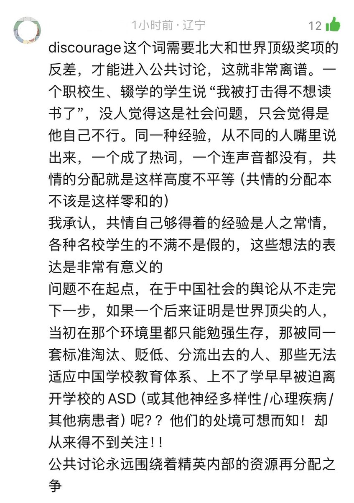

Aoi M
@aoim33
RT @Amorrr20560211: 看到一条好笑又心酸的评论：如果一个职高生表达这些东西，在网上最可能引来的评论怕不是：“跟我的准时宝说去吧” 🥲
是的呢，反思绩优主义已经成为名校学生的时尚单品在小红书上成为新的流量密码，更早地在应试教育的一层层考学体系下被丢下的学生作为…

Amorrr
@Amorrr20560211
看到一条好笑又心酸的评论：如果一个职高生表达这些东西，在网上最可能引来的评论怕不是：“跟我的准时宝说去吧” 🥲
是的呢，反思绩优主义已经成为名校学生的时尚单品在小红书上成为新的流量密码，更早地在应试教育的一层层考学体系下被丢下的学生作为真实的受害者却鲜少被听到和谈及。 https://t.co/udb4hYoASo https://t.co/tkIbSWhw9r